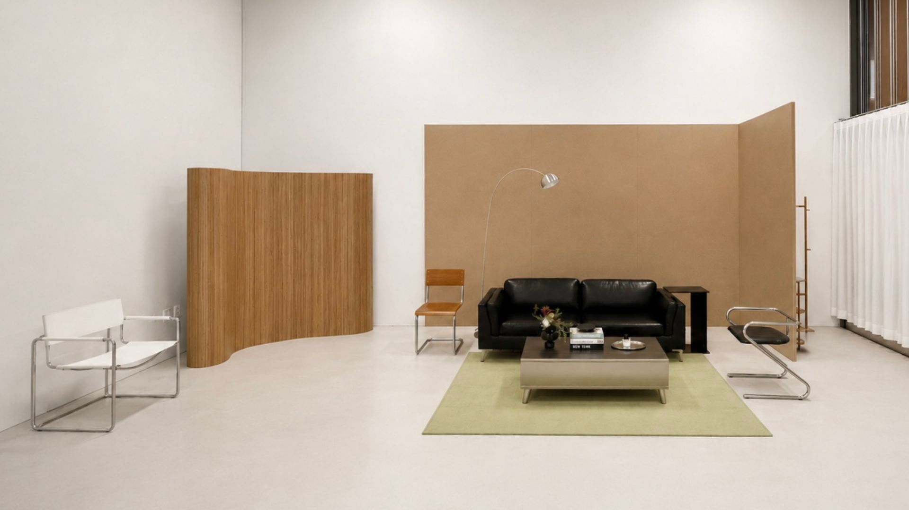
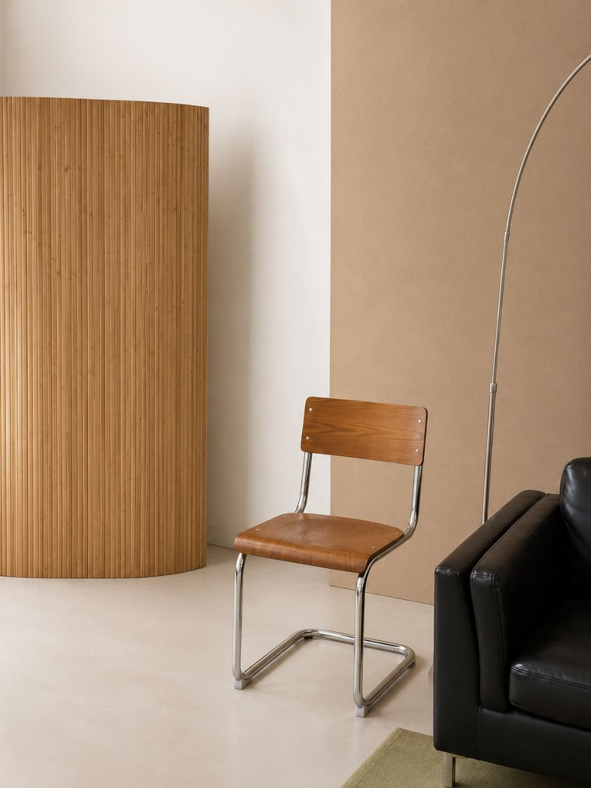
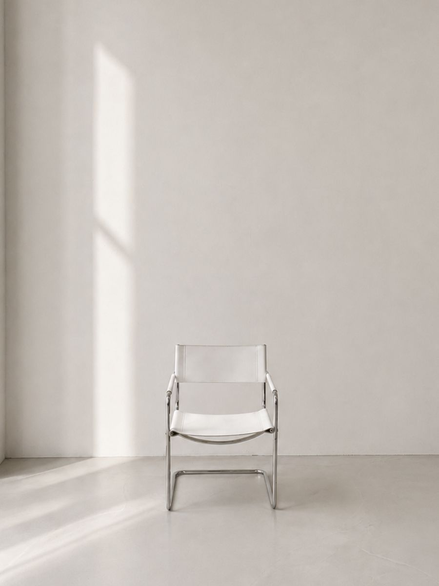
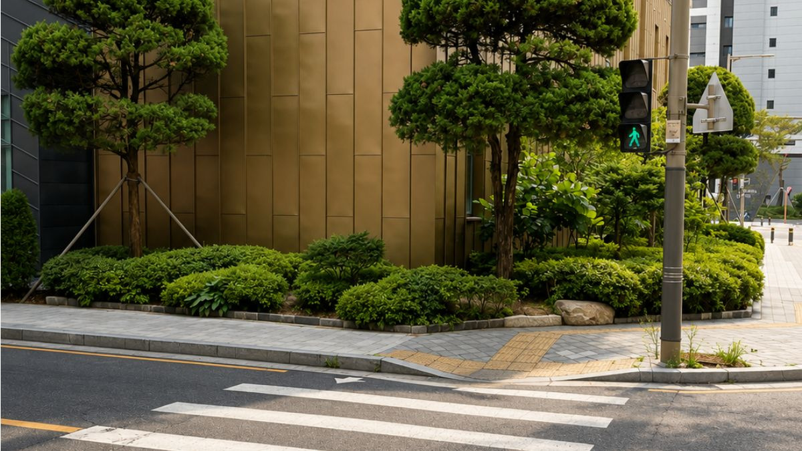
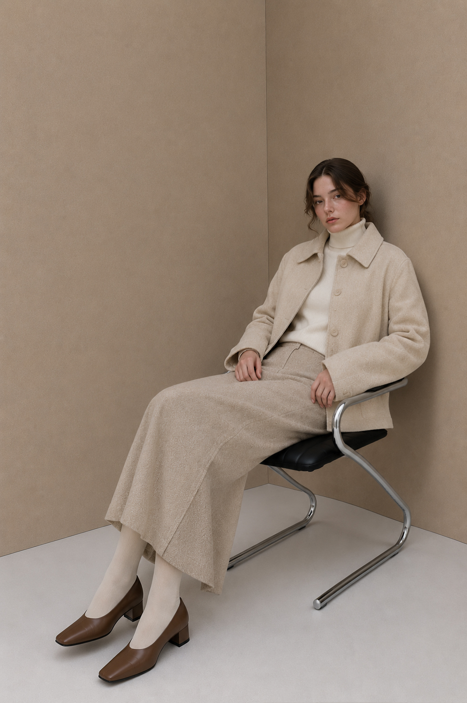
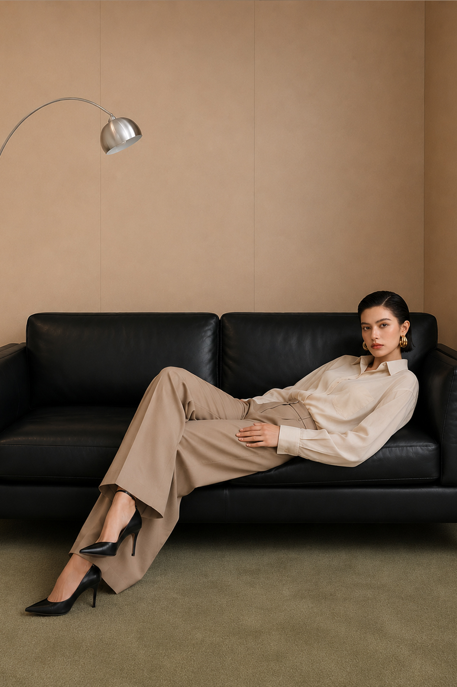
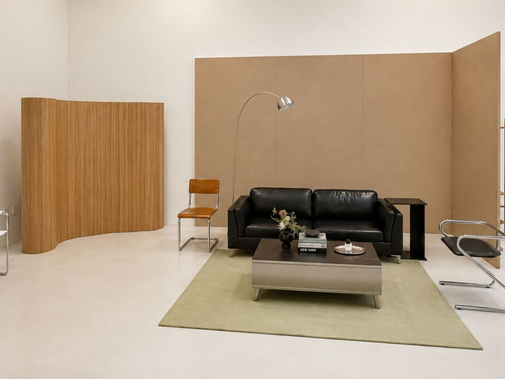

Rawscene studio, Namyangju.01 — 03
Wood, steel and a little space
for your perspective.
좋은 장면을 위한,
담백한 공간.
우드와 스틸, 화이트가 어우러진 로우씬.
패션과 제품, 그리고 당신의 이야기를 담습니다.
남양주 다산에서 만나보세요.
The space
차분한 질감과 여백.
Wood & steel
서로 다른 소재가 만드는 자연스러운 균형.


White space
색과 실루엣에 집중할 수 있는 배경.

Selected scenes
로우씬에서 담은 장면들.


- 이용 요금
- 시간당 30,000원 · 최소 2시간
기본 3인 / 추가 1인당 시간당 5,000원 - 운영 시간
- 매일 09:00–22:00
- 주소
- 경기 남양주시 다산순환로 20
현대프리미엄캠퍼스몰 D118 - 주차
- 무료주차 1대 제공 · 추가 차량 사전 문의
이용 요금 부가세 별도.